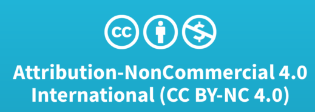
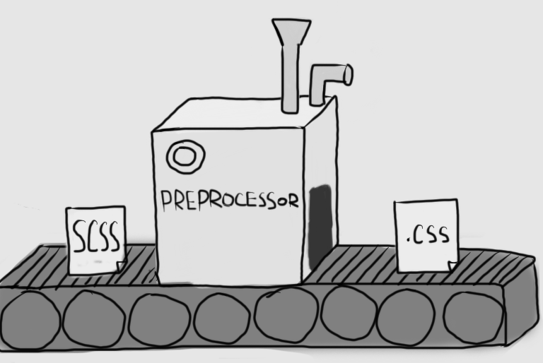
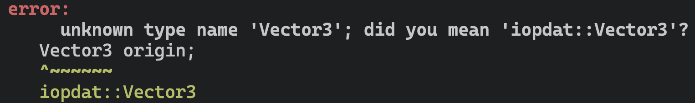
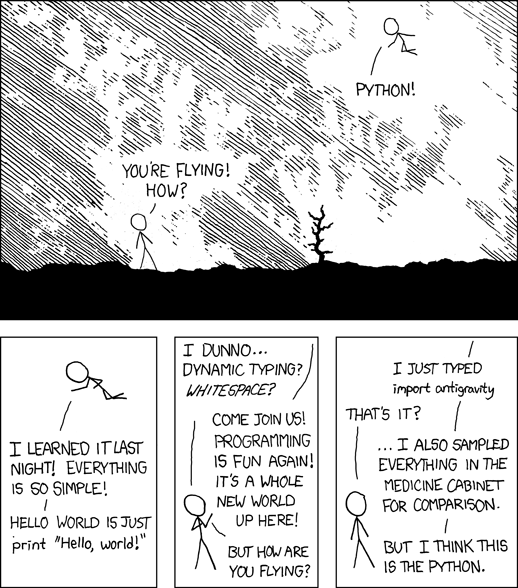
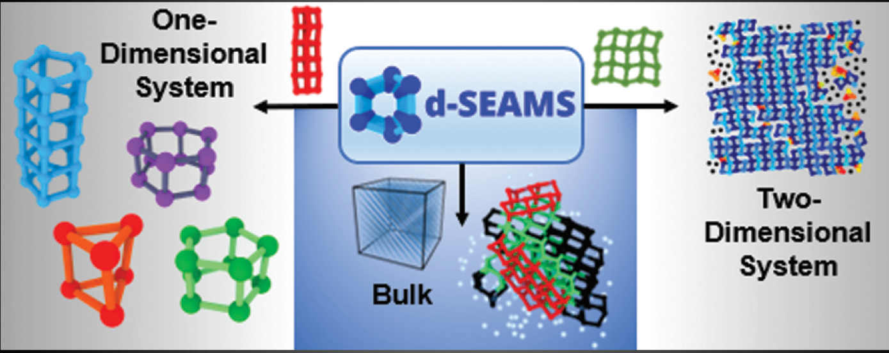
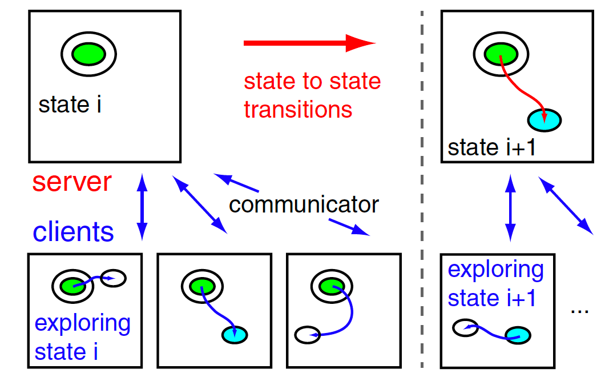
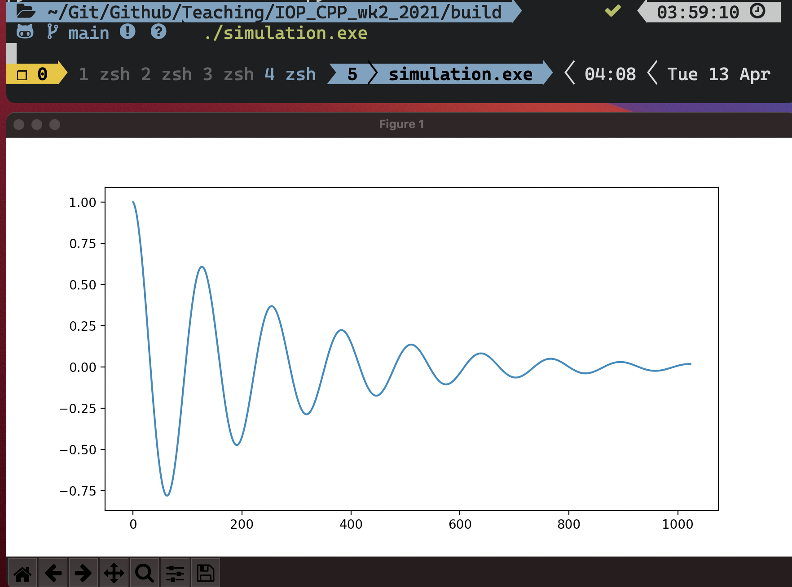
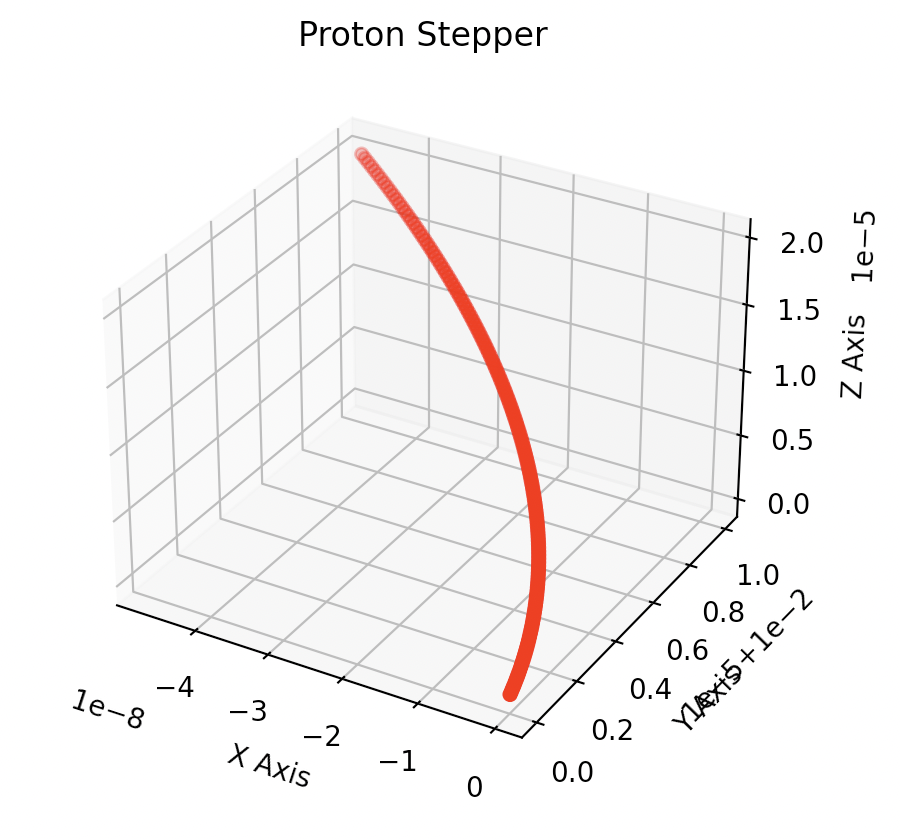

Introduction to C++ Part II
Rohit Goswami MInstP
Created: 2021-04-13 Tue 04:58
1 Brief Introduction
1.1 Hello!
- Find me here: https://rgoswami.me
- Who?
- Rohit Goswami MInstP
- Doctoral Researcher, University of Iceland, Faculty of Physical Sciences
- Rohit Goswami MInstP


1.2 Logistics
- All contents are hosted on GitHub
- Slides are in
docs/pres
- Slides are in
- Slides have shortned commit IDs
- These lead to specific points in the
git log
- These lead to specific points in the
- Questions are welcome after / during the lecture
- GitHub Discussions have been set up for this
2 Local Project Layouts
2.1 Language Agnostic Beginnings
Readme.{md,org}- Motivation, rationale, license, installation instructions
LICENSE- Plain text, and preferably an open license
- license-generator is pretty handy for this
.gitignore- Lists files which do not need to be committed; typically generated files
- gibo can be used to generate these
$ git init # Inside project $ gibo macOS Windows Xcode Emacs \ Vim Python C++ \ CMake TeX > .gitignore $ touch readme.md $ license-generator MIT \ --author "Person" $ tree -L 2 . ├── LICENSE ├── docs │ └── pres └── readme.org 2 directories, 2 files
2.2 C++ Project Structure
src/- Should be split into libraries and executables
include/- For headers, internal and external
docs/- Documentation of all kinds, typically including markdown files
CMakeLists.txt- The project build system
ci/- Scripts for continuous integration
 1
// Along each -I and INCLUDE #include<iostream>
// Starts in the same directory // Reverse order upward // -I and INCLUDE #include "path-spec"
3 Iterative Improvements - I
3.1 Refactoring CMakefile - I
- Comments are imperative
- Segregation of build allows for easy cleanup
rm -rf build
# --- Variables if(NOT CMAKE_BUILD_TYPE) set(CMAKE_BUILD_TYPE Release endif() set(CMAKE_CXX_FLAGS "-Wall -Wextra") set(CMAKE_CXX_FLAGS_DEBUG "-g") set(CMAKE_CXX_FLAGS_RELEASE "-O3")
$ # Should fail!!! $ cmake .
cmake_minimum_required(VERSION 3.14 FATAL_ERROR) # ---- Project ---- project( PenningTrapSimulationII VERSION 1.0 LANGUAGES CXX ) # ---- Include guards ---- if(PROJECT_SOURCE_DIR STREQUAL PROJECT_BINARY_DIR) message( FATAL_ERROR "In-source builds not allowed. Please make a new directory (called a build directory) and run CMake from there." ) endif()
$ # Works $ cmake -H. -Bbuild $ cmake --build build $ cd build $ simulation.exe
3.2 Header Only Includes
- These are meant for small classes
- With inlined definitions
#ifndef IOP_VEC_H #define IOP_VEC_H ... #endif /* IOP_VEC_H */
- Prevents multiple inclusion
- Modularity means more unit-tests
- Better guarantees
# --- Library set(headers "${CMAKE_CURRENT_SOURCE_DIR}/include/math_types/iop_vec.hpp") set(sources "${CMAKE_CURRENT_SOURCE_DIR}/src/main.cpp") # Build add_executable(simulation.exe ${sources}) # Add to INCLUDE target_include_directories( simulation.exe PUBLIC $<BUILD_INTERFACE:${PROJECT_SOURCE_DIR}/include> )
- We prefer
<>to""for includes
#include <math_types/iop_vec.hpp>
3.3 Namespaces
- Further improves modularity
- Fewer clashes
- Never use
using
namespace iopdat { // data_types/iop_particle.hpp class Particle { public: Vector3 position; ... } }
- Same conceptual region, even across files
namespace iopdat { // data_types/iop_vec.hpp class Vector3 { ... } }

set(headers "include/data_types/iop_vec.hpp" "include/data_types/iop_particle.hpp" )
#include <data_types/iop_vec.hpp> #include <data_types/iop_particle.hpp>
- Regrouped the
data_typesmath_typeswasn’t primitive enough- Refactoring early is normal
- With tests
3.4 Compiled Libraries
Before
class TimeStepper { private: std::vector<PhysicsProcess *> physics_list; iopdat::Particle p; double dt; public: TimeStepper(double time_step_size, double charge, double mass) : p(charge, mass) { dt = time_step_size; } ... };
After
class TimeStepper { private: std::vector<PhysicsProcess *> physics_list; iopdat::Particle p; double dt; public: TimeStepper(double time_step_size, double charge, double mass); void AddProcess(PhysicsProcess* process); void Setup(iopdat::Vector3 position, iopdat::Vector3 Velocity); void Step(); void Print(); };
3.4.1 Why?
Header Only
- Easier to install
- Can be dropped in and versioned
- Slow, especially installed
- They are expanded
Compiled
- Compiled code is faster
- Adds complexity though
- Needs a build system
- Can easier to read
- More modular
- Easier to document
$ tree -L .
.
├── CMakeLists.txt
├── LICENSE
├── docs
│ └── pres
├── include
│ ├── data_types
│ └── phys_procs.hpp
├── libsrc
│ └── phys_procs.cpp
├── readme.org
└── src
├── CMakeLists.txt
└── main.cpp
6 directories, 7 files
3.4.2 How? - I Code Separation
- declared in
.hpp
/** * @brief Takes a step * @returns None. */ void Step();
- The build system takes on most of the debt
- Compiles the code as a library
- “header-only” libraries can also be built
- Compiles the code as a library
- Ensures it can be linked at runtime
- defined in
.cpp
/** * @detail The algorithm is a direct interpretation * of standard mechanics */ void physproc::TimeStepper::Step() { iopdat::Vector3 F(0, 0, 0); for (int i = 0; i < physics_list.size(); i++) { F += physics_list.at(i)->Force(p); } iopdat::Vector3 dv(dt * F.x / p.mass, dt * F.y / p.mass, dt * F.z / p.mass); p.velocity += dv; p.position += iopdat::Vector3(p.velocity.x * dt, p.velocity.y * dt, p.velocity.z * dt); }
3.4.3 How? - II Building and Linking
- For header-only libraries
- PUBLIC -> INTERFACE
- target:
add_library(ioplib INTERFACE)
// main.cpp ... #include <phys_procs.hpp>
# Build order add_dependencies(simulation.exe ioplib) # Libraries target_link_libraries(simulation.exe ioplib) # Dependencies add_library( ioplib SHARED "libsrc/phys_procs.cpp" ) # Still need the older headers target_include_directories( ioplib PUBLIC $<BUILD_INTERFACE: ${PROJECT_SOURCE_DIR}/include> )
3.4.4 When?
- Larger projects refactor often
- Modular components make it easy for new contributors
- Reuse of code is easier this way
- The speed benefits can be considerable
- Speed here means compilation time
boostis a classic example of a mostly compiled library
Eigen3is famously header-only
Let there be libraries!! — Rohit Goswami (2021)
4 Package Management
4.1 Current Scenario
 2
- Nix is the answer!! (not here)
Pythonpoetry,pipenv,pyenvC++conan,vcpkg,cpm

4.2 CPM and CMake
mkdir -p cmake wget -O cmake/CPM.cmake "https://github.com/cpm-cmake/\ CPM.cmake/releases/latest/download/get_cpm.cmake" # Can get slow otherwise, rebuilds constantly export CPM_SOURCE_CACHE=$HOME/.cache/CPM
# --- Helpers include(cmake/CPM.cmake) CPMUsePackageLock(package-lock.cmake)
# We like locks cmake -H. -Bbuild cmake --build build --target cpm-update-package-lock
5 Testing and Continuous Integration
5.1 Testing Frameworks
C++has great testing frameworksCatch2,googletest,doctest, etc.
- Unit tests are the first layer
- Ensure each function outputs as expected
- Integration tests are for workflows
- Ensure each series of tasks connect correctly
# Catch2 CMakeLists.txt include(CTest) add_subdirectory(tests) enable_testing()
# --- Externals ./tests/CMakeLists.txt include(../cmake/CPM.cmake) CPMAddPackage("gh:catchorg/Catch2@2.13.4") add_executable(particle_tests main.cpp vector_particle-test.cpp phys_processes-test.cpp ) # Link everything target_link_libraries(particle_tests ioplib Catch2) target_compile_features(particle_tests PRIVATE cxx_std_17) # Project Libraries include_directories( ../src/include/data_types ${PROJECT_SOURCE_DIR}/src/include/) # ---- Run tests ---- add_test(NAME particleIOP-unit-tests COMMAND $<TARGET_FILE:particle_tests>)
5.2 Writing Tests
#define CATCH_CONFIG_MAIN #define CATCH_CONFIG_RUNNER #include <catch2/catch.hpp>
- The macros must not be repeated
- Many more test scenarios
- d-SEAMS has examples
- Official docs are great
- Try fixing gravity as homework!
- Open a PR (pull request) when done
#include <catch2/catch.hpp> #include <data_types/iop_particle.hpp> #include <data_types/iop_vec.hpp> #include <phys_procs.hpp> #include <iostream> TEST_CASE("Basic Vector class tests", "Vector3") { iopdat::Vector3 a{1, 2, 3}; REQUIRE(sizeof(a) == 24); REQUIRE(sizeof(a) / sizeof(1) == 6); REQUIRE(sizeof(a) / sizeof(1.0) == 3); iopdat::Vector3 b{4, 5, 6}; b += a; REQUIRE(b.x == 5); REQUIRE(b.y == 7); REQUIRE(b.z == 9); std::cout << b.x; }
5.3 Continuous Integration
- No one likes switching computers to test
- MacOS, Windows (WSL often), Many Linux distributions
- Some tests run for a long time
- Less attractive locally
nixpkgscan take over a day!
- Less attractive locally
- There are far too many options nowadays
- Wercker,
Travis CI, Shippable, GitLab CI, Github Actions
- Wercker,
- Mostly transient
dockerornixbased systems- Setup can be annoying without
nix
- Setup can be annoying without
5.4 Github Actions
- act allows local tests
name: CMake on: [push] env: BUILD_TYPE: Release jobs: build: runs-on: ${{ matrix.OS }} name: "${{ matrix.BUILD_TYPE }}" strategy: matrix: include: - BUILD_TYPE: Debug OS: ubuntu-latest - BUILD_TYPE: Debug OS: macos-latest - BUILD_TYPE: Debug ARCH: x86_64 OS: windows-latest # broken
steps: - uses: actions/checkout@v2 - name: Create Build Environment run: cmake -E make_directory ${{github.workspace}}/build - name: Configure CMake shell: bash working-directory: ${{github.workspace}}/build run: cmake $GITHUB_WORKSPACE -DCMAKE_BUILD_TYPE=$BUILD_TYPE - name: Build working-directory: ${{github.workspace}}/build shell: bash run: cmake --build . --config $BUILD_TYPE - name: Test working-directory: ${{github.workspace}}/build shell: bash run: ctest -C $BUILD_TYPE
6 Embedding and Mixed Compilation
6.1 Why Embed?
6.1.1 Visuals??
- File I/O is sufficient
simulate.exe > someFile.txt
import numpy as np import matplotlib.pyplot as plt import matplotlib.animation as animation import pandas as pd df = pd.read_csv("someFile.txt", sep=" ") # Do stuff now
- Can be better for HPC systems
- Why embed / interpolate?
6.2 Better Examples
6.2.1 d-SEAMS
- Uses
luato expose a scripting engine- Computation is still
C++
- Computation is still
- Reduces compilation requirements
- Increases flexibility
[goswamiDSEAMSDeferredStructural2020]

6.2.2 EON
- EON uses a server client architecture
- Is meant for distributed use

7 PyBind11
7.1 Embedding Python
- Example adapted from here
pip install matplotlib
CPMAddPackage( NAME pybind11 GITHUB_REPOSITORY pybind/pybind11 GIT_TAG v2.6.1 ) target_link_libraries(simulation.exe ioplib pybind11::embed)
// py::scoped_interpreter #include <pybind11/embed.h> #include <pybind11/stl.h> namespace py = pybind11; int main() { std::vector<double> signal(1024); for (size_t i = 0; i < signal.size(); ++i) signal[i] = std::exp(i / -256.0) * std::cos(2 * M_PI * 8 * i / 1024.0);
py::scoped_interpreter guard{}; using namespace py::literals; // Save the necessary local variables // in a Python dict py::dict locals = py::dict{ "signal"_a = signal, }; // Execute Python code, using the variables // saved in `locals` py::exec(R"( import matplotlib.pyplot as plt plt.plot(signal) plt.show() )", py::globals(), locals); }
7.1.1 Sample Run

7.2 Proton Stepper
// Getters double physproc::TimeStepper::getX() { return p.position.x; }
// Accumulators std::vector<double> x, y, z; for (int i = 0; i < 1E3; i++) { ProtonStepper.Step(); if (i % 7 == 0) { x.push_back(ProtonStepper.getX()); ... } } py::scoped_interpreter guard{}; using namespace py::literals; py::dict locals = py::dict{ "x"_a = x, ... }; py::exec(R"( )", py::globals(), locals);

from mpl_toolkits.mplot3d import Axes3D import matplotlib.pyplot as plt fig = plt.figure() ax = fig.add_subplot(111, projection='3d') ax.scatter(x, y, z, c='r', marker='o') plt.show()
8 Conclusions
8.1 Omitted Topics
- Documentation
- Possibly the most underrated skill in compuational work
- Package Management
- Managing OS’s
- HPC and Parallelism
- Efficient data usage and algorithms
- Code Review Practices
- Scrum and teamwork
- Inter process communication
- Across networks and process, including serialization
8.2 Further Resources
- Modern C++ Tutorial
- Community maintained, discusses features from C++11 onwards, spearheaded by Changkun Ou
- C++ Core Guidelines
- Maintained by Bjarne and Herb, great to get the pulse of the community
- Microsoft Visual Studio
- Has a surprisingly good introduction and even some projects
- A Tutorial Introduction to Nix
- Package management at the system level in a reproducible manner
- SymEngine and the Season of Docs
- Describes the present SOTA for documentation practices in the context of a large multi-language project
- CLion
- Has a solid tutorial on tests and frameworks in general
9 The End
9.1 Bibliography
- [goswamiDSEAMSDeferredStructural2020] Goswami, Goswami & Singh, D-SEAMS: Deferred Structural Elucidation Analysis for Molecular Simulations, Journal of Chemical Information and Modeling, 60(4), 2169-2177 . doi.
- [henkelmanLongTimeScale2001] Henkelman & Jónsson, Long Time Scale Kinetic Monte Carlo Simulations without Lattice Approximation and Predefined Event Table, The Journal of Chemical Physics, 115(21), 9657-9666 . link. doi.
9.2 Thanks!
Introduction to C++ Part II Rohit Goswami MInstP Created: 2021-04-13 Tue 04:58